Absence of superdiffusion in certain random spin models
Work with Pieter Claeys and Jonah Herzog-Arbeitman
University of Cambridge
September 29, 2021
\[ \nonumber \newcommand{\bra}[1]{\langle{#1}\rvert} \newcommand{\ket}[1]{\lvert{#1}\rangle} \newcommand{\braket}[2]{\langle{#1}\vert{#2}\rangle} \newcommand{\br}{\mathbf{r}} \newcommand{\bR}{\mathbf{R}} \newcommand{\bp}{\mathbf{p}} \newcommand{\bk}{\mathbf{k}} \newcommand{\bq}{\mathbf{q}} \newcommand{\bv}{\mathbf{v}} \newcommand{\bx}{\mathbf{x}} \newcommand{\bz}{\mathbf{z}} \DeclareMathOperator*{\E}{\mathbb{E}} \]
Embarrassingly simple question
What is nature of spin transport in Heisenberg chain? \[ H = \sum_j \left[X_j X_{j+1}+Y_j Y_{j+1}+ Z_j Z_{j+1}\right] \]
All 3 components conserved
(Naive) expectation: diffusion at \(T>0\) (including \(T=\infty\))
Simple?
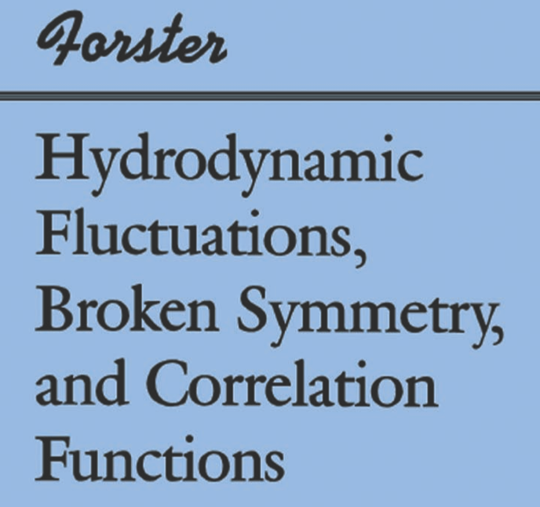
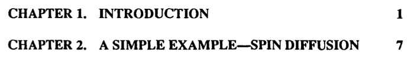
- Except: nonabelian, low dimension, integrability, …
Recent predictions
(Very) good evidence for KPZ(ish) behavior \(\ell\sim t^{2/3}\) in integrable, nonabelian models, classical and quantum
Recent review Bulchandani, Gopalakrishnan, Ilievski (2021)
- De Nardis et al. (2020) \(D(t)\sim (\log t)^{4/3}\) in classical Heisenberg chain
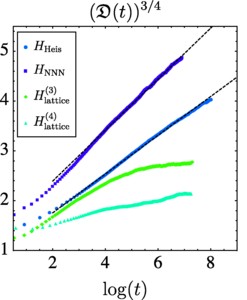
- McRoberts et al. (2021) on classical FM (blue) and AFM (orange)
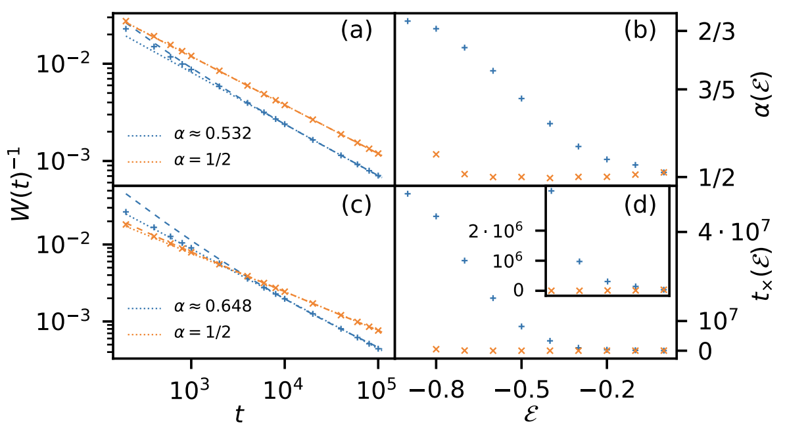
- At finite \(T\) FM looks anomalous (KPZish); AFM looks normal
- De Nardis et al. (2021) \(D(t)\sim \log t\) with noisy exchange coupling
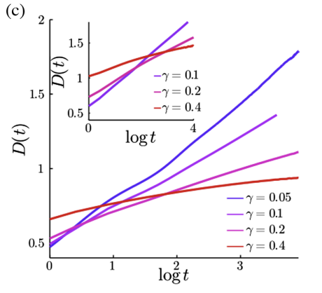
Lack of theory tools
No integrability; “weak integrability breaking” in its infancy
Absence of small parameters: exchange coupling \(J\) is only scale
This work: noisy exchange coupling
\[\begin{equation} H = \sum_{j,a} \left[(J + \xi_j(t))\sigma^a_j \sigma^a_{j+1}\right] \end{equation}\]
Studied numerically in De Nardis et al. (2021)
\(SU(2)\) invariance but no energy conservation
Expect (nonabelian) hydrodynamics of spin modes to play major role
Can develop perturbation theory in \(J\)
Correlation function
Spin-1/2 chain of \(N\) sites with spin \(\boldsymbol{\sigma}_j=(X_j, Y_j, Z_j)\) at site \(j\)
Infinite temperature spin-spin correlator
\[ C^{ab}_{jk}(t)\equiv\frac{1}{2^N}\mathop{\mathrm{tr}}\left[\sigma^a_j(0) \sigma^b_k(t)\right]\qquad \sigma^b_k(t)=\mathcal{U}^\dagger_t \sigma^b_k \mathcal{U}_t. \]
\(SU(2)\) invariance: \(C^{ab}_{jk}(t)\equiv\delta_{ab}C_{jk}(t)\) with \(\sum_{k=1}^N C_{jk}(t)=1\)
From now on fix \(a=b=z\)
Expansion in Pauli basis
\[ Z_j(t)= \sum_{\mu_{1:N}=\{0,1,2,3\}^N} \mathcal{C}_{\mu_{1:N}}(t) \sigma_1^{\mu_1}\otimes\cdots \sigma_N^{\mu_N},\qquad \sigma^\mu = (\mathbb{1},X,Y,Z) \]
- With initial condition
\[ \begin{equation} \mathcal{C}_{\mu_{1:N}}(0)=\begin{cases} 1 & \mu_j=z, \mu_k=0,\forall k\neq j \\\\ 0 & \text{otherwise}, \end{cases} \end{equation} \]
- Spin correlation function is \(C_{jk}(t) = \mathcal{C}_{0\cdots \mu_k=z \cdots 0}(t)\)

Model
- Fluctuating exchange coupling gives stochastic Schrödinger equation
\[\begin{equation}\label{eq:sse} d\ket{\psi} = \sum_j \left[-i(J dt + \sqrt{\eta}dW_j)P_{j,j+1}-\frac{\eta}{2}dt\right]\ket{\psi}. \end{equation}\]
\(P_{j,j+1}=\frac{1}{2}\left[1+\sum_a \sigma^a_j \sigma^a_{j+1}\right]\) is exchange operator
\(W_j\) independent Brownian motions (white noise \(\propto dW_j\))
Itô stochastic differential equation: last term preserves \(\braket{\psi}{\psi}\)
Operator dynamics
- Heisenberg equation of motion (\(\eta=1\))
\[ \begin{multline}\label{eq:hberg} d\mathcal{O} = \sum_j \left[i\left(J dt + dW_j\right)\left[P_{j,j+1},\mathcal{O}\right]+dt\left(P_{j,j+1}\mathcal{O}P_{j,j+1}-\mathcal{O}\right)\right]. \end{multline} \]
- \(\bar{\mathcal{O}}\equiv\E \mathcal{O}\) obeys the (adjoint) Lindblad equation
\[ \frac{d\bar{\mathcal{O}}}{dt} = \sum_j \left[iJ \left[P_{j,j+1},\bar{\mathcal{O}}\right]+\left(P_{j,j+1}\bar{\mathcal{O}}P_{j,j+1}-\bar{\mathcal{O}}\right)\right]. \]
Circuit viewpoint

- \(SU(2)\) preserving gate
\[ U_{j,j+1} = \cos\theta \mathbb{1}_{j,j+1} - i\sin\theta P_{j.j+1} \]
Operator Dynamics
\[ U_{j,j+1} = \cos\theta \mathbb{1}_{j,j+1} - i\sin\theta P_{j.j+1} \]
\[ \begin{align} \mathcal{O} \longrightarrow U^\dagger_{j,j+1}\mathcal{O}U_{j,j+1} &= \cos^2\theta \,\mathcal{O} + \sin^2\theta\, P_{j.j+1}\mathcal{O} P_{j.j+1}\\ &\qquad+i\sin\theta\cos\theta \left[P_{j.j+1}, \mathcal{O}\right] \end{align} \]
- Take distribution \(\theta=\pm \theta_0\) with \(p(\theta_0)-p(-\theta_0)\equiv \delta > 0\)
Average dynamics
\[ \begin{align} \mathcal{O} \longrightarrow U^\dagger_{j,j+1}\mathcal{O}U_{j,j+1} &= \cos^2\theta_0 \,\mathcal{O} + \sin^2\theta_0 \,P_{j.j+1}\mathcal{O} P_{j.j+1}\\ &\qquad+i\delta\sin\theta_0\cos\theta_0 \left[P_{j.j+1}, \mathcal{O}\right] \end{align} \]
- Interpretation:
- Operators on sites \(j\) and \(j+1\) switch with probability \(\sin^2\theta_0\)
- Asymmetry \(\delta\) governs strength of “quantum” dynamics
- Taking \(\theta_0=\sqrt{dt}\), \(\delta= J\sqrt{dt}\) gives continuous time evolution
Back to continuous time
\[ \frac{d\bar{\mathcal{O}}}{dt} = \sum_j \left[iJ \left[P_{j,j+1},\bar{\mathcal{O}}\right]+\left(P_{j,j+1}\bar{\mathcal{O}}P_{j,j+1}-\bar{\mathcal{O}}\right)\right]. \]
\(J=0\): master equation describing random adjacent transpositions
Preserves subspaces corresponding to fixed numbers of each of the \(\sigma^\mu\): 1 operator sector, 2 operator sector, …
\(J=0\): 1 operator sector
- Writing \(\mathcal{C}^a_{0\cdots \mu_k=a\cdots 0}\equiv C^a_k\) we have equation of motion
\[ \partial_t C^a_k = C^a_{k+1} + C^a_{k-1} - 2 C^a_k\equiv \Delta_k C^a_k \]
- Diffusion of single \(\sigma^a\) (\(\Delta_k\) is 1D discrete Laplacian)
\(J=0\): 2 operator sector
- \(C^{bc}_{j,k}\equiv \mathcal{C}_{0\cdots \mu_j=b\cdots \mu_k=c\cdots 0}\)
\[ \partial_t C^{xy}_{m,n}= \Delta_m C^{xy}_{m,n}+ \Delta_n C^{xy}_{m,n} + \delta_{|m-n|-1}C^{xy}_{m,n} \]
- Last term plus condition \(C^{xy}_{m,m}=0\) from hardcore condition
Perturbation theory
\[ \frac{d\bar{\mathcal{O}}}{dt} = \sum_j \left[iJ \left[P_{j,j+1},\bar{\mathcal{O}}\right]+\left(P_{j,j+1}\bar{\mathcal{O}}P_{j,j+1}-\bar{\mathcal{O}}\right)\right]. \]
\[\begin{align} i[P,\sigma^a\otimes 1]&=-\epsilon^{abc}\sigma^b\otimes\sigma^c\nonumber\\\\ i[P,1\otimes \sigma^a]&=\epsilon^{abc}\sigma^b\otimes\sigma^c\nonumber\\\\ i[P,\sigma^a\otimes \sigma^b]&=\epsilon^{abc}\left(\sigma^c\otimes 1- 1\otimes \sigma^c\right). \label{eq:split-merge} \end{align}\]
Sum of first two expressions vanishes by spin conservation
Describe operator “splitting” (\(1\to 2\)) and “merging” (\(2\to 1\)).
Equation of motion
- In component form
\[ \begin{align} \partial_t \mathcal{C}_{\mu_{1:N}} = \sum_j \left[J\epsilon_{\alpha\beta \mu_j \mu_{j+1}} \mathcal{C}_{\mu_1\cdots \alpha\beta \cdots \mu_N} + \mathcal{C}_{\mu_1\cdots \mu_{j+1}\mu_j \cdots \mu_N} - \mathcal{C}_{\mu_1\cdots \mu_{j}\mu_{j+1} \cdots \mu_N}\right]. \end{align} \]
Simple approximation
- 1 and 2 operator sectors, dropping coupling to higher sectors
\[ \begin{align} \partial_t C^z_n = J\left[C^{xy}_{n-1,n}-C^{xy}_{n,n-1}-C^{xy}_{n,n+1}+C^{xy}_{n+1,n}\right] +\Delta_n C^z_n, \end{align} \]
\[ \begin{align} \partial_t C^{xy}_{m,n}& = J \left[\delta_{m+1,n}\left(C^z_m-C^z_{m+1}\right)+\delta_{m,n+1}\left(C^z_{n+1}-C^z_n\right)\right] \nonumber\\\\ &\qquad+\Delta_m C^{xy}_{m,n}+ \Delta_n C^{xy}_{m,n} + \delta_{|m-n|-1}C^{xy}_{m,n} \end{align} \]
Result for correlator
- \(C^z(\eta,\omega)=\left[i\omega - \Omega(\eta)-\Sigma(\eta,\omega)\right]^{-1}\) in terms of self-energy
\[\begin{equation} \Sigma(\eta,\omega) = \frac{4J^2}{N} \sum_{\eta_1+\eta_2=\eta} \frac{\left[\cos(\eta_1)-\cos(\eta_2)\right]^2}{\Omega(\eta_1)+\Omega(\eta_2)-i\omega},\qquad \Omega(\eta)\equiv 4\sin^2(\eta/2) \end{equation}\]
- Hardcore constraint plays no role due to antisymmetry of vertex
Hydrodynamic limit:
- For \(\Omega(\eta)\to \eta^2\) and \(\omega=O(\eta^2)\)
\[\begin{equation} \Sigma(\eta, \omega) = J^2\eta^2\left[1+\frac{1}{2}\sqrt{\eta^2-2i\omega}\right]. \label{eq:se-final-low} \end{equation}\]
The diffusion pole at \(\omega=-i\eta^2\) becomes a pair
\[\begin{equation} \omega_\pm = -i(1+J^2)\eta^2 \pm |\eta|^3\frac{J^2}{2}\sqrt{1+2J^2} + O(\eta^4). \label{eq:poles} \end{equation}\]
Branch point \(\omega=-i\eta^2/2\): min. \(\omega(\eta_1)+\omega(\eta_2)\) when \(\eta_{1,2}\to\eta/2\).
Analytic structure
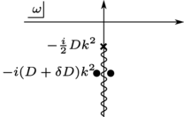
Enhanced diffusion
\[\begin{equation} \omega = -i(1+J^2)\eta^2 \pm |\eta|^3\frac{J^2}{2}\sqrt{1+2J^2} + O(\eta^4). \end{equation}\]
\(J\) enhances ordinary diffusion
Find transient diffusion constant using \(D(t) = -\frac{1}{2} \left. \partial_t\partial^2_\eta C^z(\eta;t) \right\vert_{\eta=0}\)
\[\begin{align} D(t) = 1 + J^2 - J^2 e^{-4t}\left[I_0(4t)+I_1(4t)\right]\\ \underset{t\to\infty}{\longrightarrow} 1 + J^2 - \frac{J^2}{\sqrt{2\pi t}} \end{align}\]
Numerics
Represent \(Z_j(t)\) using MPO and evolve using TEBD (based on TeNPy)
\(\chi = 400\), truncation error \(\epsilon = 10^{−12}\), \(\delta t = 10^{-2}\)
Exact for \(J=0\) (\(\chi=2\))
Diffusion constant
- 100 spins
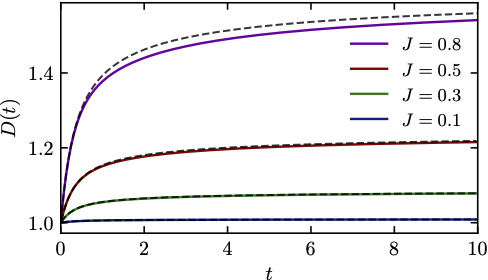
- Analytic calculation (dashed) upper bounds \(D(t)\)
Profile
\[\begin{equation} \omega = -i(1+J^2)\eta^2 \pm |\eta|^3\frac{J^2}{2}\sqrt{1+2J^2} + O(\eta^4). \end{equation}\]
- Assuming poles dominate profile saddle point analysis yields
\[\begin{align}\label{eq:saddlepointprofile} C(x;t) \propto \exp\left(-\frac{x^2}{2Dt}\right)\exp\left(-\frac{J^2 \sqrt{2J^2+1}}{2 D^3}\frac{|x|^3}{t^2}\right) \end{align}\]
- 2nd factor hints at \(\ell\sim t^{2/3}\) for KPZ!
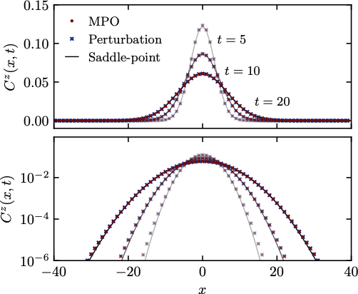
\[\begin{align} C(x;t) \propto \exp\left(-\frac{x^2}{2Dt}\right)\exp\left(-\frac{J^2 \sqrt{2J^2+1}}{2 D^3}\frac{|x|^3}{t^2}\right) \end{align}\]
Nonabelian hydrodynamics
- Glorioso et al. (2020): corrections to current
\[ J^a = -D\nabla s^a + \lambda \epsilon_{abc} s^b \nabla s^c \]
Implies \(\sim \lambda^2/\sqrt{t}\) corrections to diffusion constant
Consistent with \(D(t) \underset{t\to\infty}{\longrightarrow} 1 + J^2 - \frac{J^2}{\sqrt{2\pi t}}\)
Higher orders?
- Recall 2nd order result
\[\begin{equation} \Sigma(\eta, \omega) = J^2\eta^2\left[1+\frac{1}{2}\sqrt{\eta^2-2i\omega}\right] \end{equation}\]
Branch point \(\omega=-i\eta^2/2\): min. \(\omega(\eta_1)+\omega(\eta_2)\) when \(\eta_{1,2}\to\eta/2\).
On kinematic grounds: at order \(J^{2n}\) branch point at \(\omega=-i\eta^2/n\): minimum \(\omega(\eta_1)+\omega(\eta_2)+\cdots +\omega(\eta_n)\) for \(\eta_{1,2,\ldots n}\to\eta/n\).
Diffuson cascade?
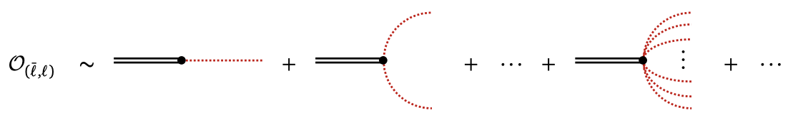
Contribution of \(n\)-diffusons is \(\sim n! (k\ell_\text{th})^{nd}\exp\left(-\frac{Dk^2t}{n}\right)\)
Optimal \(n\) gives contribution \(\sim \exp\left(-\alpha\sqrt{Dk^2|t|}\right)\)
Would be interesting to see this in a microscopic model!
Penrose colouring
- Recall each vertex has \(\epsilon_{abc}\). For planar graph this counts 3-colorings
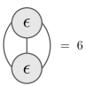
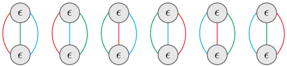
- Some graphs can’t be 3-colored
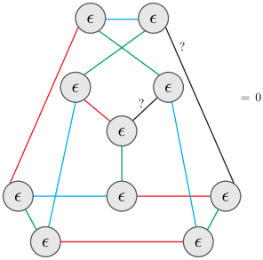
- Some non-planar graphs give zero
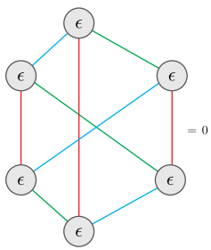